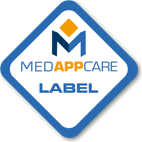
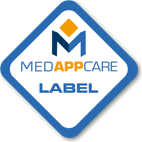

Co-fondée par des ingénieurs en informatique et des médecins, nous sommes une jeune entreprise d'édition de logiciels spécialisée dans l'aide au diagnostic médical et ses applications dans le domaine de la prévention. Nous croyons beaucoup dans la synergie apportée par cette double compétence, qui nous a permis de développer un savoir faire unique dans le domaine de la vaccinologie et de la médecine des voyages.
Nos services
MesVaccins.net
MesVaccins.net est une plateforme d'information, de communication et d'expertise sur les vaccins et la vaccination. La base de connaissance de MesVaccins.net est mise à jour en temps réel au fur et à mesure de la parution de nouvelles recommandations.
MesVaccins.net propose un système expert capable de déterminer les vaccins recommandés pour une personne en fonction de ses caractéristiques individuelles (âge, sexe, grossesse, état de santé, conditions de vie et de travail, entourage, voyages) et des vaccins qu’elle a déjà reçus (nature de ces vaccins, intervalles entre les doses, âge d’administration des doses). Ce système expert est intégré dans un carnet de vaccination électronique (CVE) partagé entre le citoyen et le ou les professionnels de santé de son choix. Le CVE personnalise l’information destinée au grand public, augmentant l’impact de cette information, et apporte une aide à la décision aux professionnels de santé.
Colibri
Colibri est un logiciel métier développé pour recenser l’activité vaccinale d’un établissement tout en intégrant l’expertise de MesVaccins.net. Il permet à ce titre un accès permanent aux statistiques du centre — compatibles avec le rapport d'activité et de performance demandé par les ARS et alculées en temps réel — et fournit aux professionnels de santé un diagnostic vaccinal personnalisé à chaque patient.
Colibri est compatible avec l'ensemble des services proposés par MesVaccins.net, incluant les services MedecineDesVoyages.net et JeVoyage.net.
Plus d'informations sur le logiciel sont disponibles dans la présentation du logiciel Colibri.

MedecineDesVoyages.net
MedecineDesVoyages.net est un service de conseils personnalisés et actualisés en temps réel aux voyageurs, proposant en fonction des conditions de voyage :
- Les vaccinations personnalisées du voyageur incluant, pour la vaccination contre la fièvre jaune, la mise à jour en temps réel des recommandations vaccinales de l'OMS et des conditions exigées par les pays ;
- La chimioprophylaxie personnalisée du paludisme, adaptée à la destination, à la durée du séjour et au voyageur, avec détermination de la liste des produits utilisables selon l'âge, le poids, un éventuel état de grossesse ;
- La liste des répulsifs utilisables en fonction du pays ;
- Les informations générales sur le pays, incluant les cartes politiques et reliefs en haute définition et les cartes de risques si pertinent.
JeVoyage.net
JeVoyage.net est un service complémentaire au site MedecineDesVoyages.net, accessible en ligne. Il permet aux patients d'un centre de vaccination de préparer leur consultation en ligne et d'obtenir les informations nécessaires à la consultation. Le dossier comprend :
- Les informations que le centre souhaite communiquer au patient sur la consultation (tarif, lieu de la consultation, document à fournir, etc.) ;
- Une version informatisée du formulaire que le patient doit compléter préalablement à sa consultation ;
- Des conseils sanitaires personnalisés, adaptés à la destination et aux caractéristiques individuelles du voyageur.
Les informations fournies par le patient sont ensuite récupérées par le praticien dans le cadre de la consultation, ce qui lui permet un gain de temps et contribue à l'amélioration de la qualité des informations fournies par le patient.
Nous proposons également nos services en marque franche, cf. notre descriptif des marques franches.
Ils croient en nous
Nos prix & distinctions
Nous faisons partie des 50 startups les plus innovantes identifiées par l'Usine Nouvelle en avril 2016.
Syadem posséde le statut de Jeune Entreprise Innovante, et a obtenu la labellisation Digital Aquitaine en 2015 !
 
